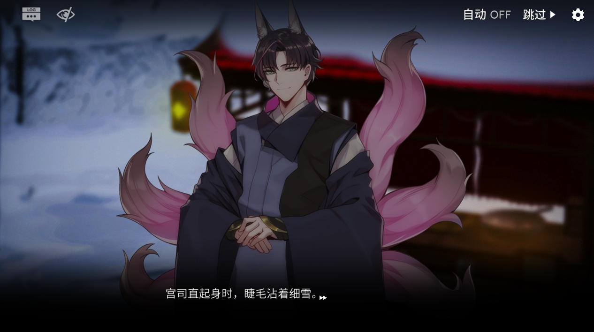
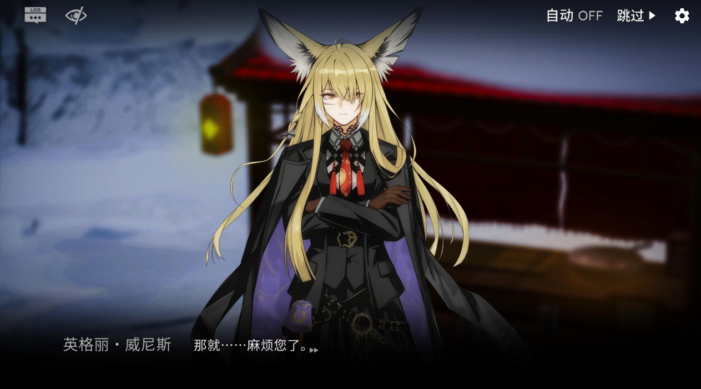
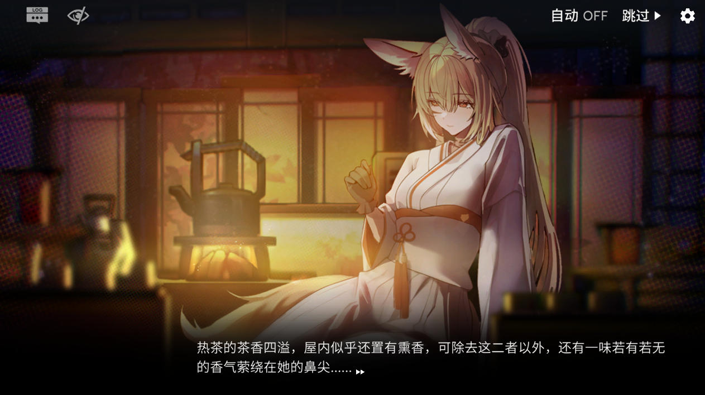

化身女祭司，在泉迷乱影中探寻真相。
一部用头发与黑眼圈换来的独立心血之作。
《女祭司之眼》并非一款追求工业级完美的商业产品，而是一次独立创作者对“动态叙事”的极致探索。第一章「泉迷乱影」历经三个月打磨，虽自谦“数值用脚填、美术差强人意”，但每一帧 Spine 动画、每一段剧情分支，都凝聚着作者对 SLG 玩法的深刻理解与满腔热忱。
本作主打高自由度角色养成与沉浸式动态 CG 演出。你将面对性格迥异的 NPC，在信仰与欲望、责任与自我之间做出抉择。无论是铃兰的温柔、戴菲恩的冷峻，还是 Mon3tr 的神秘，每位角色都有专属的剧情线与差分表现。



出场阵容：
README.txt，内含针对性解决方案。我们致力于在现有资源下提供最佳体验。